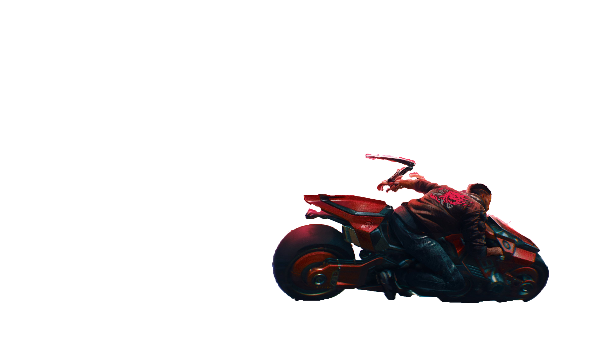
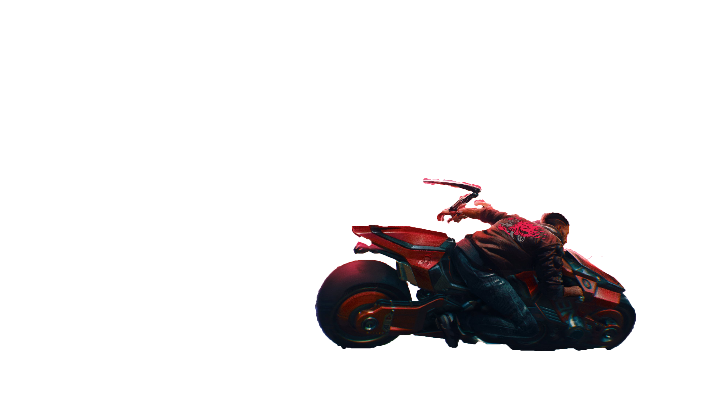

Miasto
miasto w Wolnym Stanie Północnej Kalifornii, położone na zachodnim wybrzeżu Stanów Zjednoczonych. Populacja miasta liczy sobie około sześciu milionów mieszkańców rozsianych wokół wielu dzielnic miasta, przez co jest to najbardziej zaludniona miejscowość w Kalifornii. Do roku 2077 Night City zostało ogłoszone „Najgorszym miastem do zamieszkania w Ameryce”. Jest to główna lokalizacja gier fabularnych Cyberpunk 2013, 2020, V 3.0 i Red oraz Cyberpunk 2077.